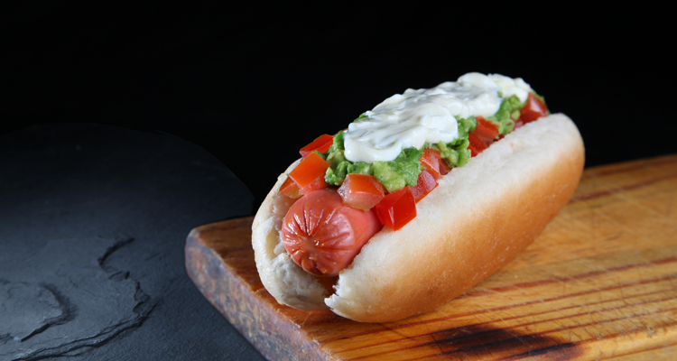

Completo

The preferred chileans fast food, The chilean Hot Dog
This is only a way to prepared, called completo italiano.
Called italiano (italian) for his colours; the red of tomato, the green of palta (aguacate) and the white of mayonnaise (usually homemade).
ingredients:
Servings: 4
- 4 hot dog bread
- 4 wieners
- 2 tomatoes
- 2 ripe paltas (avocado)
- Mustard (optional)
- ketchup (optional)
Directions
- In a pot, cook the wieners in hot water for 5 minutes.
- Wash and peel the tomatoes.
- Peel and cut the paltas, then with a fork crushed for give it a puree form.
- Open breads without break it, and heated it to 100º celsius grades (212º F).
- Add the wieners onto the bread, put tomato and spread the top with palta. Then finally put mayonnaise.
- If you want, put ketchup or mayonnaise, or both.